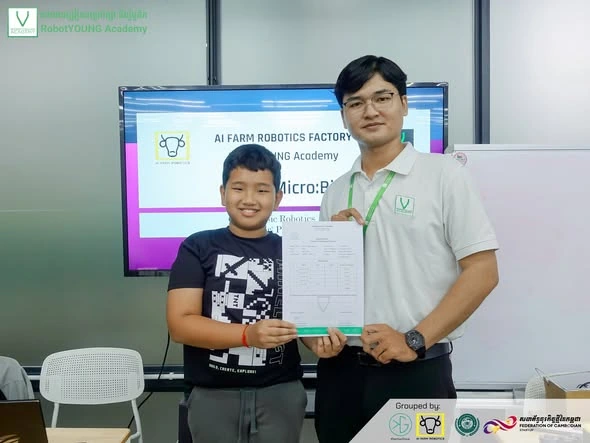
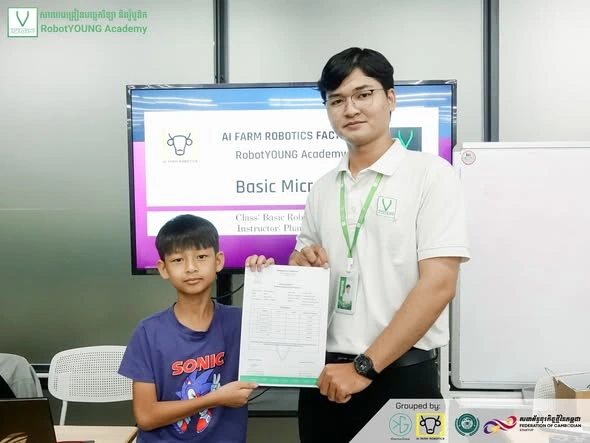
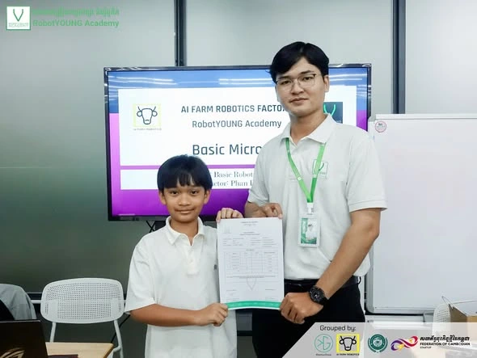
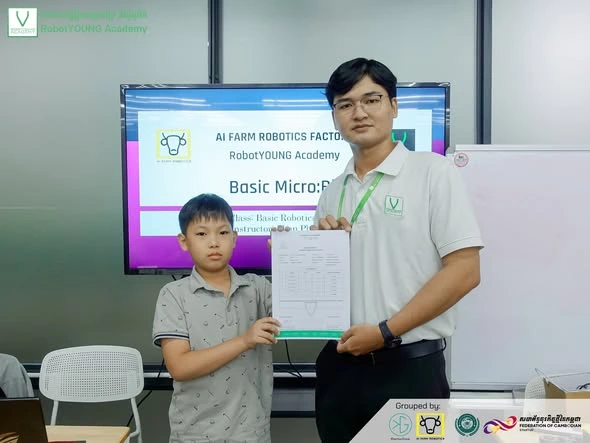

🤖 អបអរសាទរចំពោះសិស្សានុសិស្ស RobotYOUNG Academy - Congratulations to Our Students!
បន្ទាប់ពីការខិតខំប្រឹងប្រែងសិក្សា និងអនុវត្តជាក់ស្តែងយ៉ាងតឹងរ៉ឹង សិស្សានុសិស្សរបស់យើងបានបញ្ចប់មួយកម្រិតសិក្សាបន្ថែមទៀត (Robotics Engineering Program) ជាមួយនឹងលទ្ធផលគួរជាទីមោទន និងវិញ្ញាបនបត្របញ្ជាក់ការសិក្សាដោយជោគជ័យ! តាមរយៈកម្មវិធីសិក្សា Robotics និង STEAM ពួកគេមិនត្រឹមតែទទួលបានចំណេះដឹងផ្នែកទ្រឹស្តីនោះទេ ប៉ុន្តែថែមទាំងបានអភិវឌ្ឍជំនាញសំខាន់ៗសម្រាប់អនាគតដូចជា៖
✅ ការសរសេរកូដ និងអេឡិចត្រូនិច (Coding & Electronics)
✅ ការរចនា និងផ្គុំរ៉ូបូត (Robot Building & System Design)
✅ ការគិតវិភាគ និងការដោះស្រាយបញ្ហាជាក់ស្តែង
EN: After dedicated hands-on learning, our students successfully completed their Robotics Engineering level and earned their well-deserved certificates! Through Robotics and STEAM, they have powerfully developed essential future-ready skills, including programming, circuit design, critical thinking, and real-world problem-solving.
#STEAM#Robotics#FutureSkills#RobotYOUNGAcademy



